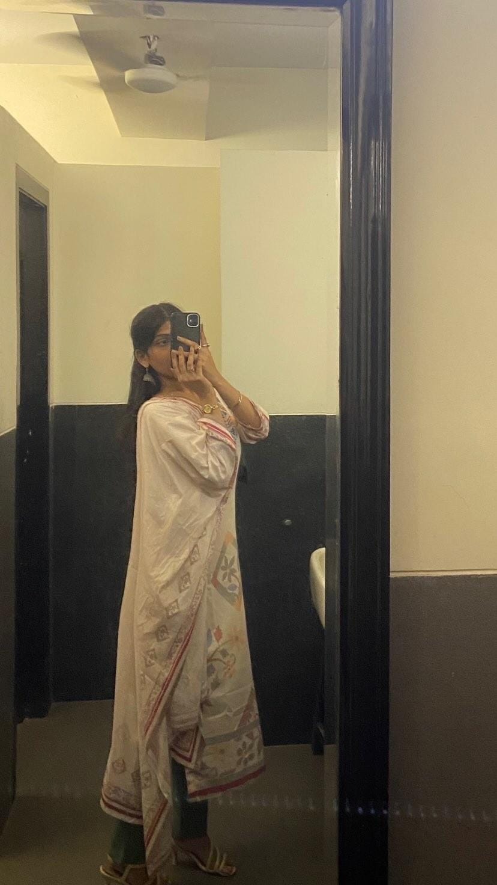

Happy Women's Day श्री सखी
Were I to whisper to the fourteen-year-old Harshvardhan, "This is the woman for whom your heart shall beat with unwavering reverence, for whom you shall toil and thrive," the boy would be enraptured beyond the farthest reaches of earthly delight—his joy, an untamed tempest surpassing measure or bound.
❮

❯
A thousand thanks would scarcely suffice, yet I shall speak it a million times more—Tana, your grace as a daughter, a beloved, and an extraordinary soul never ceases to amaze me. I am endlessly grateful for your presence in my life, a gift beyond measure. Thank you, from the depths of my heart, for choosing to be mine.